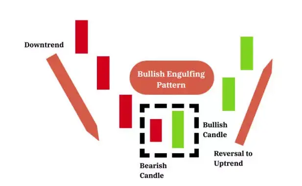
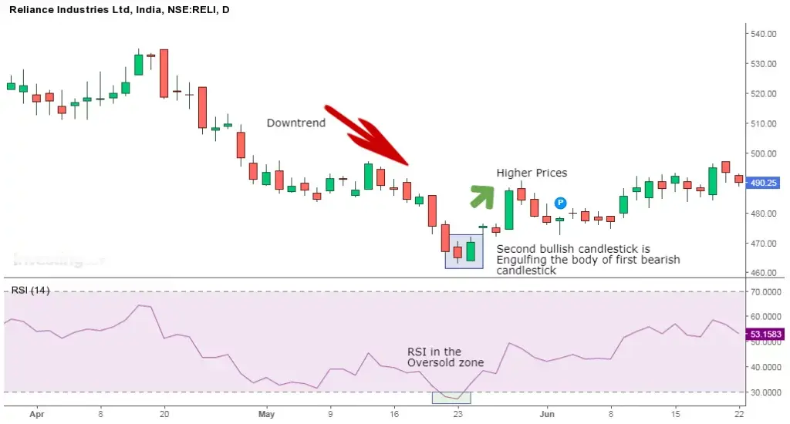
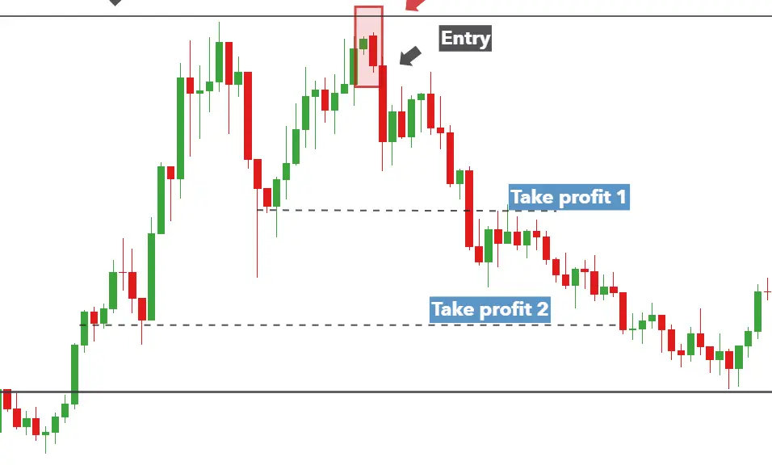

The bearish engulfing pattern is the opposite of the bullish pattern.
It signals a reversal of the uptrend and indicates a fall in prices by the sellers who exert the selling pressure when it appears at the top of an uptrend
This pattern triggers a reversal of the ongoing trend as more sellers enter the market and they make the prices fall.
| What Does the Bearish Engulfing Look Like? |

| Trading Example: 1 |
Similarly when trading with the Bearish Engulfing pattern, one should remember the below points:

